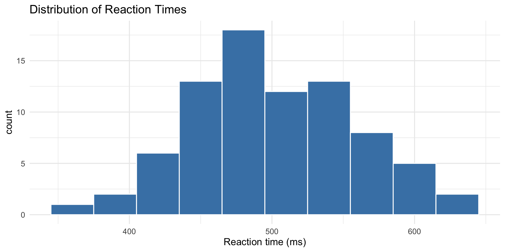
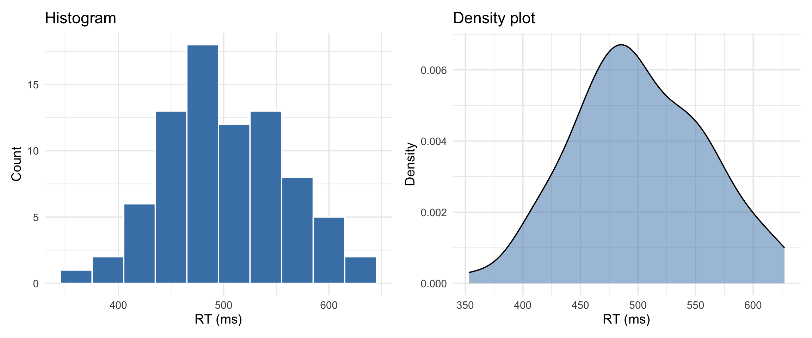
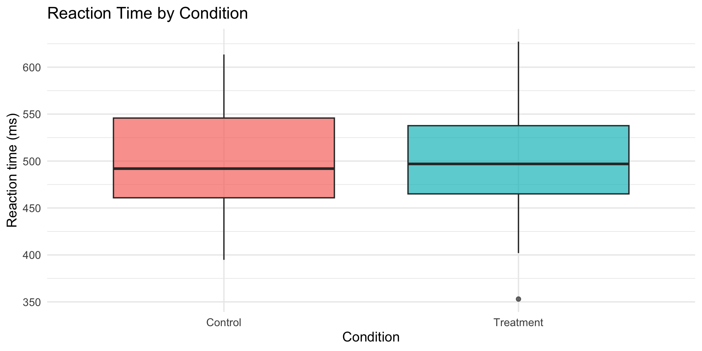
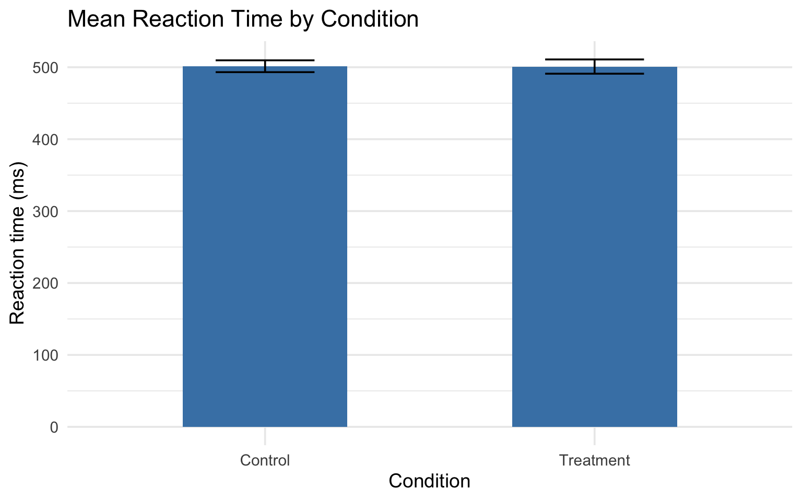
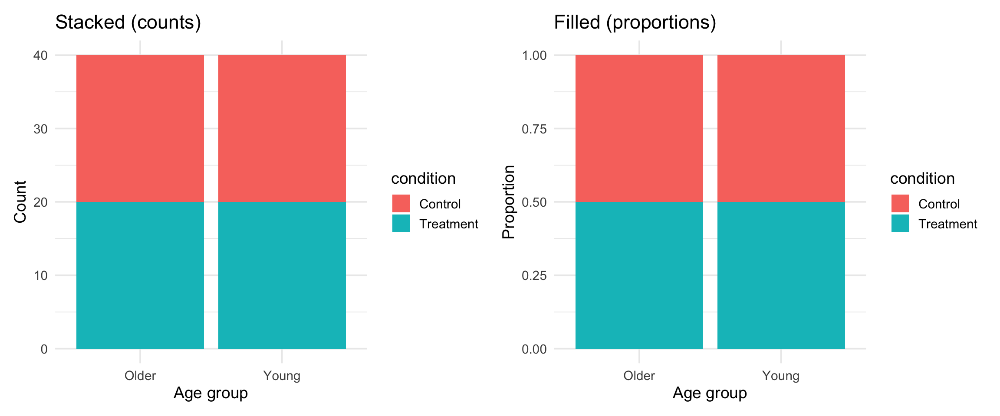
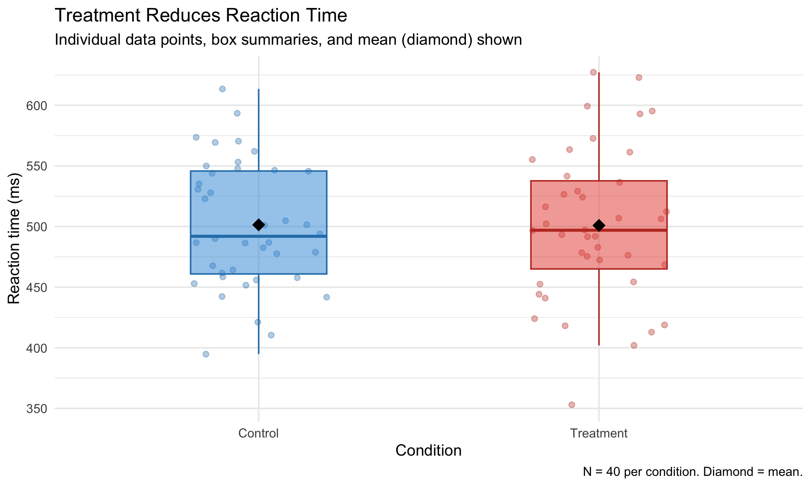

reaction_data |>
ggplot(aes(x = rt)) +
geom_histogram(
binwidth = 30,
fill = "steelblue",
color = "white") +
labs(
title = "Distribution of Reaction Times",
x = "Reaction time (ms)"
) +
theme_minimal(base_size = 14)Layers & Aesthetics
PSY 410: Data Science for Psychology
Dr. Sara Weston
2026-04-20
Choosing the right geom
Same data, two stories
Both use the same data. The difference is layers — and the right layers tell the right story.
The wrong geom doesn’t just look bad — it can actively mislead.
Geom selection guide
| Your data | Good geom | Avoid |
|---|---|---|
| One continuous variable | geom_histogram(), geom_density() |
geom_bar() |
| One categorical variable | geom_bar() |
geom_histogram() |
| Two continuous | geom_point(), geom_smooth() |
— |
| One continuous + one categorical | geom_boxplot(), geom_violin() |
pie charts |
| Two categorical | geom_count(), geom_tile() |
— |
| Change over time | geom_line() |
geom_point() alone |
One variable: distributions
One variable: distributions

histogram vs density
Histogram = actual counts. Density = smoothed estimate of the shape.
One categorical variable
One categorical variable

One continuous + one categorical
One continuous + one categorical

boxplot vs violin
Violin shows the full distribution shape. Boxplot shows summary stats. Both have their place.
stat_summary()
The psychology staple: means + error bars
In psych papers, you’ll see this constantly: a bar chart showing group means with error bars. stat_summary() is how you make it.
stat_summary() basics
reaction_data |>
ggplot(aes(x = condition, y = rt)) +
stat_summary(
fun = mean,
geom = "bar",
fill = "steelblue", width = 0.5) +
stat_summary(
fun.data = mean_cl_normal,
geom = "errorbar",
width = 0.3) +
labs(
title = "Mean Reaction Time by Condition",
x = "Condition",
y = "Reaction time (ms)"
) +
theme_minimal(base_size = 14)stat_summary() basics

Breaking down stat_summary()
fun= the function to calculate (mean, median, etc.)fun.data= a function that returns ymin, y, ymax (likemean_cl_normal)geom= what shape to use to show the result
What are error bars showing?
This matters! Always state it in your figure caption.
| Error bar type | What it means | How to get it |
|---|---|---|
| SE (standard error) | Precision of the mean | mean_se |
| SD (standard deviation) | Spread of the data | Write your own |
| 95% CI | Confidence interval | mean_cl_normal |
Why does this matter?
The APA Publication Manual (7th ed.) recommends showing individual data points alongside summary statistics whenever possible.
Bar charts with error bars are ubiquitous in psychology — but they hide the shape of the data. Outliers, bimodality, and floor/ceiling effects all disappear behind a rectangle.
Adding individual data points
Error bars alone hide the data. Show the points too:
reaction_data |>
ggplot(aes(x = condition, y = rt, color = condition)) +
geom_jitter(width = 0.15, alpha = 0.4, size = 2) +
stat_summary(fun = mean, geom = "point", size = 4, color = "black") +
stat_summary(fun.data = mean_cl_normal, geom = "errorbar", width = 0.2, color = "black") +
labs(
title = "Reaction Time by Condition",
subtitle = "Error bars = 95%CI. Individual points shown.",
x = "Condition",
y = "Reaction time (ms)"
) +
theme_minimal(base_size = 14) +
theme(legend.position = "none")Adding individual data points

Pair coding break
Your turn: 10 minutes
Using the reaction_data dataset:
- Create a bar chart with error bars showing mean RT by condition
- Add individual data points (jittered) behind the bars
- Color the bars by condition
- Add a caption noting that error bars show the 95% CI.
Tip
You’ll need stat_summary() twice — once for the bar, once for the error bars. Look at the examples from the last few slides.
Before we move on
📤 Upload your code to Canvas for participation credit. Paste what you have into today’s in-class submission — it doesn’t need to work perfectly.
Position & scales
Position adjustments
When geoms overlap, position adjustments fix it:
| Position | What it does | When to use |
|---|---|---|
"dodge" |
Side by side | Grouped bar charts |
"stack" |
Stacked on top | Stacked bars |
"fill" |
Stacked to 100% | Comparing proportions |
"jitter" |
Random wiggle | Overplotted points |
dodge: grouped bar charts
reaction_data |>
ggplot(aes(x = age_group, y = rt, fill = condition)) +
stat_summary(fun = mean, geom = "bar", position = "dodge", width = 0.6) +
stat_summary(fun.data = mean_cl_normal, geom = "errorbar",
position = position_dodge(0.6), width = 0.2) +
labs(
title = "Reaction Time by Age Group and Condition",
x = "Age group",
y = "Mean RT (ms)"
) +
theme_minimal(base_size = 14)dodge: grouped bar charts

stack and fill
Scales: controlling axes and colors
Scales translate data values into visual properties:
# Control axis range
scale_y_continuous(limits = c(0, 800))
# Control axis breaks (tick marks)
scale_x_continuous(breaks = seq(400, 700, by = 50))
# Set specific colors
scale_fill_manual(values = c("Control" = "lightblue", "Treatment" = "coral"))
# Use a colorblind-friendly palette
scale_fill_viridis_d()scale_fill_manual()
reaction_data |>
ggplot(aes(x = condition, y = rt, fill = condition)) +
geom_boxplot(alpha = 0.7) +
scale_fill_manual(values = c("Control" = "#3498db", "Treatment" = "#e74c3c")) +
labs(title = "Custom colors", x = "Condition", y = "RT (ms)") +
theme_minimal(base_size = 14) +
theme(legend.position = "none")Use a website like HTML color codes to find the appropriate HEX code for your color.
scale_fill_manual()

Coordinate systems
coord_flip() in action
coord_flip() in action

Putting it together
A polished psychology figure
reaction_data |>
ggplot(aes(x = condition, y = rt, fill = condition, color = condition)) +
geom_jitter(width = 0.2, alpha = 0.35, size = 2) +
geom_boxplot(alpha = 0.5, width = 0.4, outlier.shape = NA) +
stat_summary(fun = mean, geom = "point", shape = 18, size = 5, color = "black") +
scale_fill_manual(values = c("Control" = "#3498db", "Treatment" = "#e74c3c")) +
scale_color_manual(values = c("Control" = "#2980b9", "Treatment" = "#c0392b")) +
labs(
title = "Treatment Reduces Reaction Time",
subtitle = "Individual data points, box summaries, and mean (diamond) shown",
x = "Condition",
y = "Reaction time (ms)",
caption = "N = 40 per condition. Diamond = mean."
) +
theme_minimal(base_size = 14) +
theme(legend.position = "none")A polished psychology figure

Get a head start
Assignment 4 preview
Assignment 4 will ask you to create “bad” and “good” versions of figures. Start experimenting:
- Take any plot from today and make it deliberately bad — wrong geom, missing labels, confusing colors
- Then fix it. What did you change and why?
- Try creating the same data with three different geoms. Which one communicates best?
Wrapping up
Today’s toolkit
| Tool | What it does |
|---|---|
geom_histogram() |
Distribution of one continuous variable |
geom_density() |
Smooth distribution estimate |
geom_boxplot() |
Summary of continuous by categorical |
geom_violin() |
Full distribution by categorical |
stat_summary() |
Calculate and display summary stats |
position = "dodge" |
Side-by-side grouped plots |
scale_fill_manual() |
Custom colors |
coord_flip() |
Swap axes |
Before next class
📖 Read:
- Supplementary: Visual perception principles (will be posted)
- Optional: Knaflic, Storytelling with Data, Ch 1–3
✅ Practice:
- Create a bar chart with error bars for a dataset of your choice
- Try boxplot vs violin on the same data
- Experiment with
coord_flip()andscale_fill_manual()
Key takeaways
- Match your geom to your data — the wrong choice misleads
- stat_summary() is powerful — means, error bars, custom functions
- Position adjustments handle overlap (dodge, stack, fill, jitter)
- Scales control axes, colors, and legends
- coord_cartesian() zooms; scale limits drop data — know the difference
The one thing to remember
The difference between a chart and a figure is intention — every layer should earn its place.
Next time: Perception & Design
PSY 410 | Session 7